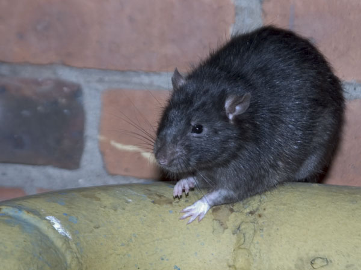

Nataly
Крысиная история
https://ficbook.net/readfic/1259285
Разделавшись с плошкой яблочного пюре, крыс Мулька повернулся к "детской" половине клетки, где, давно покончив со своим ужином, весело скакал Тимка, и позвал:
— Эй, мелкий! Поди-ка сюда, поговорить надо.
— Чего, дядь Муль? — беззаботно откликнулся Тимофей и подошёл поближе.
— Мне хозяйка сказала, ты намедни опять провод сгрыз. Правда?
— Тимка похлопал глазами, стыдливо вздохнул и почему-то облизнулся.
— Чего глазами-то лупаешь? — ворчливо поинтересовался Мулька. После сытного ужина ему хотелось подремать, а не вести нравоучительные беседы. — Мне хозяйка и говорит: хоть ты, говорит, ему объясни, что так нельзя. Ты же ему старший товарищ, вроде как наставник...
Тимка поковырял задней лапой коврик и попытался (без особого успеха) изобразить на своей продувной серой морде раскаяние.
Из клетки, стоящей напротив, на холодильнике, послышался какой-то шорох. Взглянув туда, Мулька обнаружил, что его старый неприятель Джет устроился у самой дверцы, удобно подвернув под себя хвост, положил голову на скрещенные лапы и весь обратился в слух, причем на морде у него играет нехорошая мечтательная улыбка.
Мысленно выругавшись, Мулька повернулся к воспитуемому и продолжил:
— Удивляюсь я на тебя, право. Ты что, голодный? Кормят плохо?
 Тимка покосился на ломящуюся от зерна кормушку. Возразить было нечего: кормили его хорошо.
Тимка покосился на ломящуюся от зерна кормушку. Возразить было нечего: кормили его хорошо.
— Что за молодежь пошла! — наставительно продолжал Мулька. — И развлечения у нее какие-то дикие, как у пасюков с помойки! В мои годы такого не было. Вот когда я, Тимка, был в твоем возрасте, со мной у хозяев не было никаких хлопот!
— То-то они за тобой гонялись по всей квартире, когда ты со стола сигал, — послышался с холодильника задумчивый голос Джета. — Развлекались так, наверное!
Мулька мрачно покосился на холодильник.
— Ты, Тимка, всяких посторонних крысов не слушай, — предупредил он. — Они... это... преувеличивают. Хотя, конечно, любил я и побегать, и попрыгать. Шустрый был, это уж точно, — продолжал он, невольно расплываясь в улыбке при этих воспоминаниях. — Ну что ж такого? Побегать-попрыгать для крыса — дело святое, как говорится, танцуй, пока молодой. Но вот зубы в ход пускать без толку — этого ни-ни! Вот, к примеру скажем, кусаться, — продолжал он, постепенно воодушевляясь от зрелища собственной праведности, — да кошка меня задери, ежели я хоть раз...
 Тут с холодильника донеслось негромкое, но ядовитое: "Гм-гм!"
Тут с холодильника донеслось негромкое, но ядовитое: "Гм-гм!"
Мулька осёкся, помолчал, а затем заключил уже совершенно искренне:
— Ну а проводов я никогда в жизни не трогал. Даже и не знал, какие такие бывают провода. Ну, висят — а мне-то что? А ты... Вон какой здоровенный оболтус вырос, а ведёшь себя хуже трёхнедельного! Ну, скажи, где твоя совесть?
Тимка зевнул, деликатно прикрыв рот лапкой.
— Ты хоть объясни, зачем ты их жрешь? — допытывался Мулька. — Вкусные они, что ли?
Тимка поднял на своего наставника честные глаза.
— Вкусные, — убежденно ответил он. — Очень. Ты, дядь Муль, сам попробуй!
Мулька, не ожидавший такого поворота беседы, замолчал и задумался. По выражению его морды нетрудно было догадаться, что он борется с искушением, и искушение побеждает.
— Пе-да-гог! — проговорил из своей клетки Джет таким тоном, каким лорд Гленарван говорил Паганелю: "Ге-о-граф!"
Тут Мулька не выдержал.
— Тебя не спросили, аристократ блохастый! — рявкнул он, угрожающе вздыбив шерсть на загривке. — Смотри, хвост откушу и скажу, что так и было!
В сущности, именно такой реакции Джет и добивался — однако, как бывало уже не раз, оказался к ней морально не готов. Наглость беспородного Мульки поразила его до глубины души. Джет затрясся от ярости и вцепился лапами в решётку.
— Это мы ещё посмотрим, — проговорил он с каким-то шипением в голосе, — эт-то мы ещё посмотрим, кто кому первый откусит хвост!
Тимка понял, что пора вмешаться.
— Дядь Муль, — проговорил он, ткнув наставника теплым носом в бок, — дядь Муль, да ну его, давай лучше поборемся! Ну давай, а? А потом ты мне ещё раз расскажешь, как ты из Квартиры на Лестницу убегал!
— Да отстань, Тимка! — заворчал Мулька, перевернувшись на бок и вяло отмахиваясь лапами. — Ничего там интересного нету, на лестнице — холод, темень и грязь... Да тише ты, неугомонный!
Джет Сильвер смотрел на них с видом необыкновенного превосходства. Вот он, обладатель родословной из четырех поколений, никогда не стал бы так себя вести! Ни за что он не позволил бы какому-то нахальному серому шкету завалить себя на спину, словно он и вправду сильнее; ни за что не стал бы кататься по клетке с ним в обнимку, сотрясаясь от смеха всей своей обширной тушкой... Он, Джет, кстати, не растолстел, как некоторые — в свои полтора года он такой же стройный и подвижный, как в шесть месяцев. И не побурел, а сохранил свой благородный чёрный окрас. А все потому, что следит за собой, в еде разборчив и привередлив, не кидается на кормушку, как голодный пасюк — опять-таки в отличие от некоторых! И уж, разумеется, не станет грызть то, что не предназначено для еды!..
Кстати, об этих проводах... Интересно, они и вправду такие вкусные?